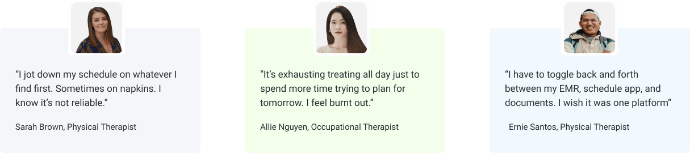
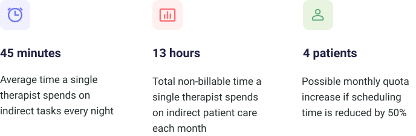
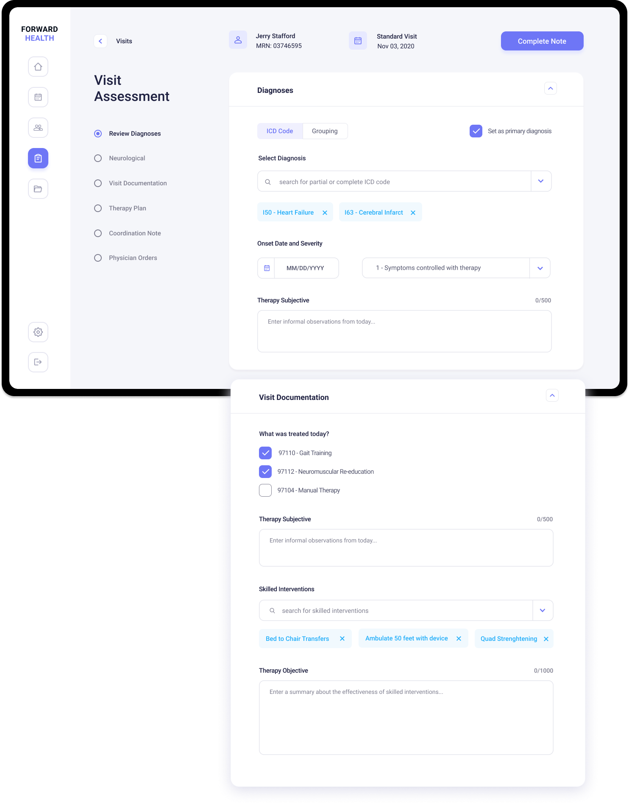
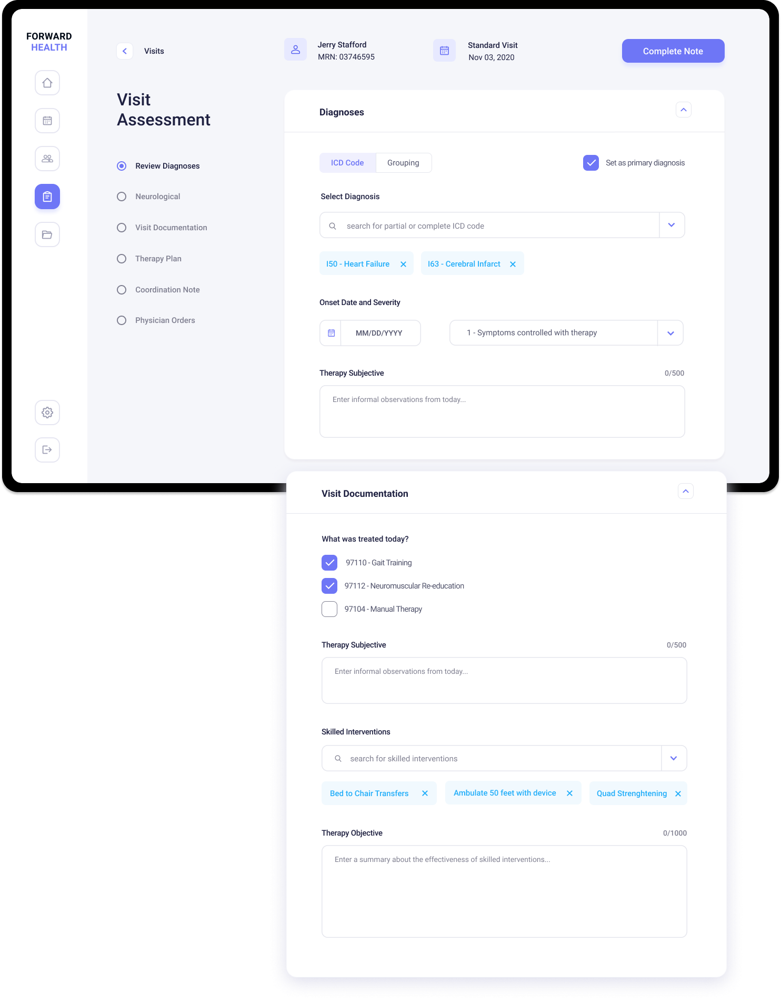

Forward Health is a cloud storage workspace solution for home health therapists delivering remote rehabilitation services to their patients. Designed in response to the COVID19 outbreak.
UX/UI Designer
Research, Strategy, Design, Branding
The global pandemic caused a shift to remote delivery models for allied health. The lack of physical office space creates some headaches for therapists. Mainly, scheduling and session prep are time consuming and often require work off the clock.
Forward Health is an innovative healthcare software designed for remote allied health professionals. It easily manages work schedules and medical documentation to streamline indirect patient care tasks.
I conducted user interviews with eight therapists who deliver remote services. They all referenced indirect patient care tasks as most time consuming.
I crunched some numbers using data collected from my user interviews. There are serious areas of waste that impact caseload and revenue.
I developed personas to represent two different Forward Health users, clinical managers and direct care therapists. I kept their motivations in mind while exploring user stories and task flows.

I created user flows to serve as a road map for interactions with the product. The aim was to simplify and consolodate indirect patient care tasks.
I sketched out possible layouts for the product pages based on the user flows. Rapid iterations allowed me to work through some initial design challenges in a quick and efficient manner.
Using my sketches for reference, I created digital wireframes in Figma. They were designed to mirror an intuitive therapy process, starting with chart review then scheduling and finally visit documentation.

The visual elements give the product a clean but modern feel. I used bright colors and icons to communicate product functions while improving the speed of indirect patient care tasks. Let's take a look at key pages.
Serves as a tool for vizualizing and analyzing important patient metrics. It also provides immediate access to upcoming visits and tracks patient status changes.

Aims to drastically reduce scheduling time by offering multiple touch points to add visits. Each visit type has its own color code, making it easier for users to prepare for upcoming sessions.

Comprehensive overview of pertinent medical information for therapist review. Organized in a succinct and logical manner to streamline the chart review process.


Speeds up documentation time but dividing each portion of the note into its own section. The series of short forms eliminate redundancy and reduce the need for free typing.
 
